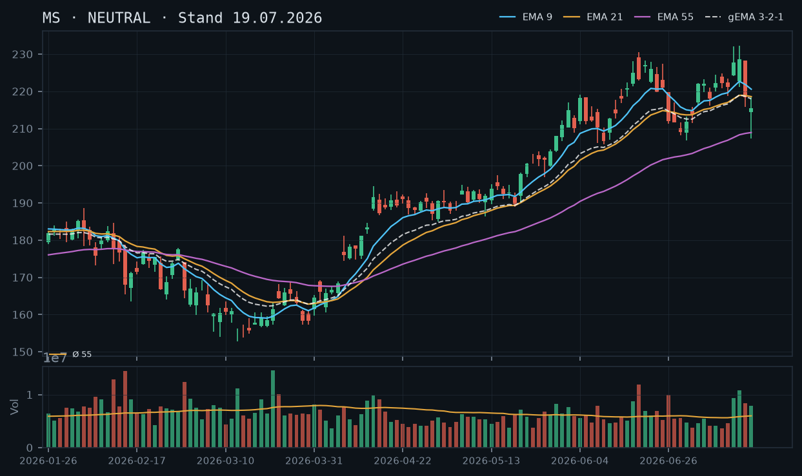
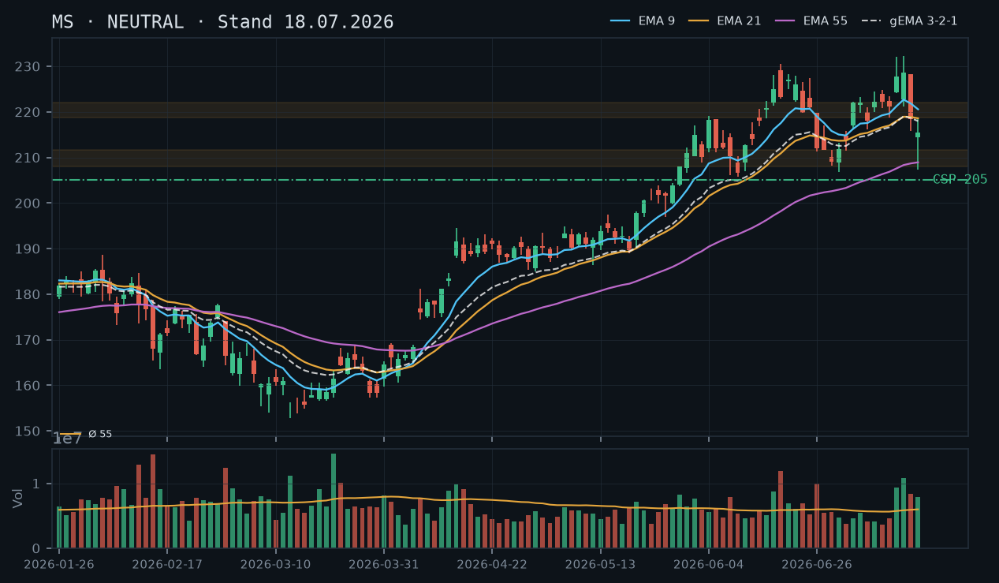
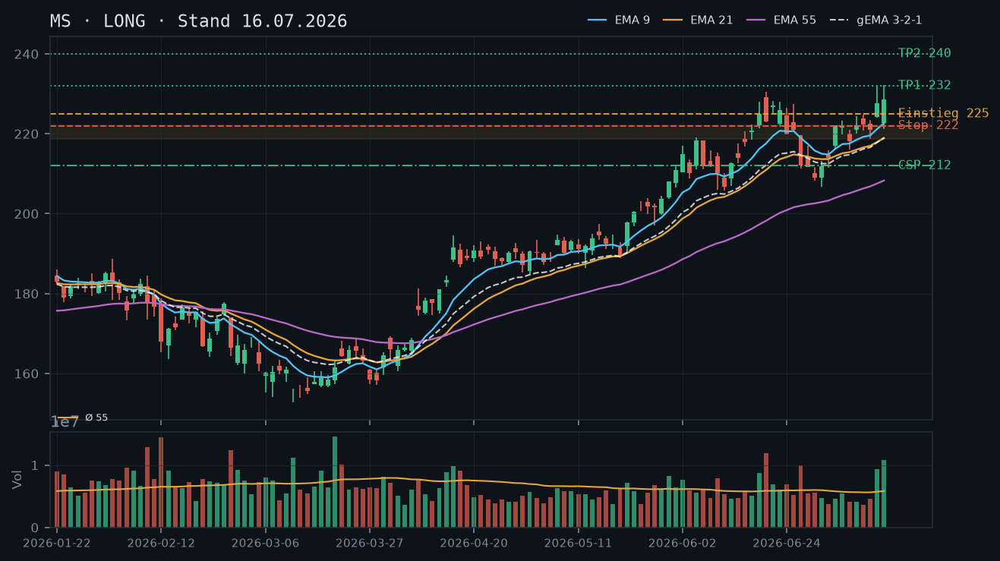
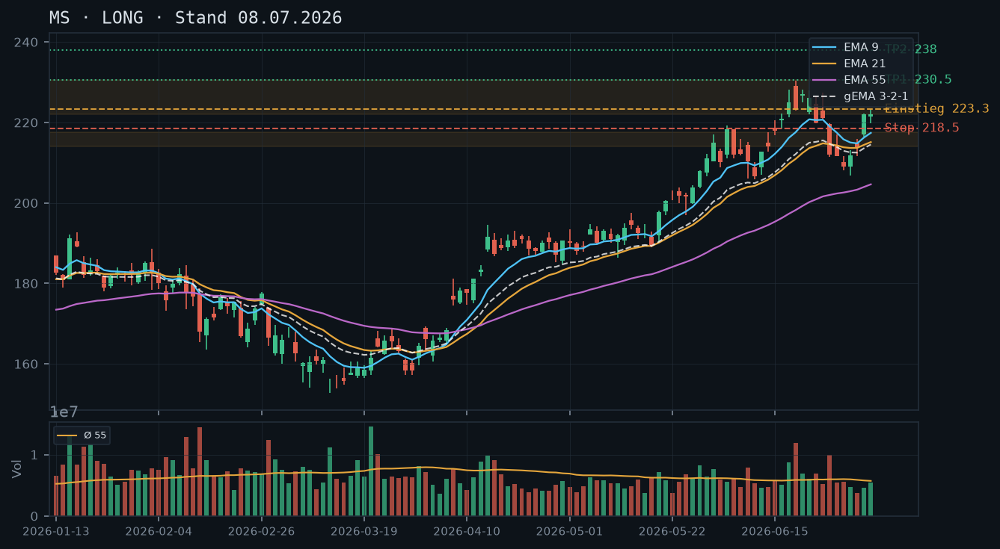

MS
Analyse-Historie · neueste zuerstMS stabilisiert sich nach dem Post-Earnings-Reversal in der Zone 215–219 $, beide bestehenden Short Puts (205 / 210, Verfall 24.07.) sind mit 1 DTE und minimalen Restwerten praktisch am Ziel – Fokus liegt auf dem Aufbau des nächsten CSP-Setups nach dem morgigen Verfall.

1 · Trendstruktur
Die kurzfristige Trendstruktur bleibt technisch gebrochen: Das Sequenz-Hoch vom 15.07. bei 232,25 $ wurde durch das Bearish Engulfing vom 16./17.07. mit Tagestiefs bis 207,40 $ konterkariert – eine Reihe tieferer Hochs und Tiefs (ATH 232,25 → Hoch 228,23 → aktuell unter 220 $). Die Zone 215–219 $ fungiert aktuell als kurzfristiger Support, bestätigt durch den dreifachen Test am 20./21./22.07. Der übergeordnete Trend (seit März-Tief 154,87 $) bleibt intakt, aber der mittelfristige Impuls ist abgekühlt. EMA55 bei 209,59 $ steigt weiter – struktureller Rückhalt vorhanden.
2 · Candlestick-Formationen
Die letzten drei Kerzen zeigen eine zaghafte Stabilisierung: 20.07. – bearishe Kerze mit langem unteren Docht (Low 210,35 $, Schluss 210,94 $), 21.07. – bullischer Rebound (+5,46 $ Range, Schluss 216,40 $), 22.07. – Inside-Day mit engem Body (215,52–219,63 $, Schluss 218,50 $) bei extrem niedrigem Volumen (rel. Volumen 0,61 – deutlich unter Schnitt). Die Inside-Kerze bei Niedrigvolumen signalisiert Konsolidierung ohne Richtungsbestimmung – kein Ausbruchssignal in beide Richtungen.
3 · EMA-Lage (9 / 21 / 55)
EMA9 (218,25 $) und EMA21 (217,81 $) liegen nahezu deckungsgleich und knapp unterhalb des aktuellen Kurses (218,65 $) – ein Kompressions-Artefakt nach dem scharfen Rücksetzer, der die kurzfristigen EMAs auf das mittelfristige Niveau gedrückt hat. EMA55 bei 209,59 $ steigt stetig und liegt rund 9 $ unter dem Kurs. Der gema_321 (216,66 $) liegt ebenfalls unter dem Kurs. Die Reihenfolge EMA9 > EMA21 > EMA55 ist nominal wiederhergestellt, aber der extrem geringe Abstand zwischen EMA9 und EMA21 (0,44 $) zeigt fehlende Dynamik – kein bullisches Momentum-Signal.
4 · Trade-Setup
| Richtung | Kein Trade |
| Einstieg | Abwarten: Tagesschluss klar über 220 $ mit steigendem EMA9 und Volumen >1,0× Schnitt als Bedingung für Long-Wiedereinstieg |
| Stop | — |
| Ziel | — |
| CRV | — |
5 · Stillhalter (max. 12 Tage)
Die beiden bestehenden Short Puts (205 / 210, Verfall 24.07., 1 DTE) sind mit Restwerten von 0,08 $ bzw. 0,29 $ praktisch wertlos und sollten bei Verfall morgen verfallen. Das Hauptaugenmerk liegt auf dem Aufbau des nächsten CSP-Setups für den Verfall 01.08.2026, sobald der morgige Verfall abgewickelt ist. Ein Covered Call kommt erst bei Rückeroberung der 224–228 $-Zone in Frage.
| Geschäft | Cash-Secured Put |
| Strike | 207.5 |
| Puffer | 5.1 % |
| Zone | unter EMA55 (209,59 $) und dem bestätigten Reaktionsbereich 208–212 $ (mehrfach getestet 17./20.07.) |
| Verfall bis | 2026-08-01 (9 Tage) |
| Begründung | Strike 207,50 $ liegt unterhalb des steigenden EMA55 (209,59 $) und des Bereichs 208–212 $, der am 17.07. (Intraday-Low 207,40 $) und am 20.07. (Low 210,35 $) als Reaktionszone diente. Der Puffer von 5,1 % berücksichtigt die erhöhte Volatilität der Post-Earnings-Phase. Andienungsszenario: Kauf bei 207,50 $ wäre ein Einstieg knapp über dem Juli-Tief-Wick und deutlich unter dem Earnings-Gap-Niveau – fundamental gut begründet. In der Optionskette prüfen: Prämie sollte angesichts des 5,1 %-Puffers bei erhöhter IV (Post-Earnings) noch attraktiv sein; Delta unter –0,20 anstreben; Bid-Ask-Spread und Open Interest am 207,50er oder alternativ am 205er (nächster handelsgängiger Strike) prüfen. |
Bestand: Bestehende Short Puts 205 / Verfall 24.07. (1 DTE, Preis 0,08 $, Abstand 6,7 %) und 210 / Verfall 24.07. (1 DTE, Preis 0,29 $, Delta –0,092, Abstand 4,1 $): Beide Positionen sind mit einem kombinierten Restwert von unter 0,40 $ praktisch am Ziel. Bei einem Kurs von 218,65 $ sind beide Strikes mit 13,65 $ bzw. 8,65 $ out-of-the-money – ein Verfallen am 24.07. ist bei stabiler Marktlage sehr wahrscheinlich. Handlungsempfehlung: Halten bis Verfall morgen, kein vorzeitiges Schließen erforderlich (Rückkaufkosten stehen in keinem Verhältnis zum Restwert). Ausnahme: Schließen, falls der Kurs intraday überraschend unter 212 $ fällt und der 210er-Put sprunghaft auf über 1,00 $ steigt. Nach Verfall: Aufbau des Nachfolge-CSP wie oben beschrieben. Der Aktienbestand (200 Stück) ermöglicht Covered Calls, ist aber bei aktueller Marktstruktur noch nicht sinnvoll einzusetzen.
Ausführliche Analyse vom 23.07.2026 anzeigen
MS – Detailanalyse 23.07.2026
1. Trendstruktur & Zonen
Der übergeordnete Aufwärtstrend seit dem März-Tief (154,87 $ am 13.03.) ist strukturell intakt – MS hat in vier Monaten rund 77 $ zugelegt. Der Impuls beschleunigte sich ab Mitte Juni (220,83 $ am 16.06. → 232,25 $ ATH am 15.07.). Das Post-Earnings-Reversal vom 16./17.07. hat jedoch die kurzfristige Trendstruktur gebrochen: Auf das ATH folgte eine Zwei-Tages-Sequenz mit einer Bearish-Engulfing-Kerze (16.07., rel. Volumen 1,40×) und einem Continuation-Gap-Down am 17.07. (Open 214,40 $, Low 207,40 $, rel. Volumen 1,31×). Damit wurden innerhalb von zwei Tagen rund 17 $ vom Hoch abgegeben.
Relevante Zonen:
- Support Zone A – 215–219 $: Dreifach bestätigt am 20.07. (Low 210,35 $, Schluss 210,94 $ – knapper Ausbruch nach unten, dann Erholung), 21.07. (Low 212,25 $) und 22.07. (Low 215,52 $). Die Zone entspricht der alten Konsolidierungsbasis vor dem Earnings-Ausbruch (08.–13.07.) und stellt nun kurzfristigen Support dar. Achtung: Ein einzelner Intraday-Test am 20.07. mit Schluss darunter schwächt die Verlässlichkeit dieser Zone leicht.
- Support Zone B – 208–212 $ (EMA55-Bereich): Das Intraday-Tief vom 17.07. (207,40 $) und das Low vom 20.07. (210,35 $) definieren diesen Bereich als reaktive Zone. EMA55 bei 209,59 $ steigt und nähert sich diesem Bereich von unten. Mehrfach getestet – gilt als bestätigt.
- Widerstand 224–228 $: Entspricht der Konsolidierungszone vor dem finalen Earnings-Push (14./15.07.) und dem 16.07.-Open (228,23 $). Dieser Bereich muss zurückerobert werden, um den kurzfristigen Abwärtsimpuls zu neutralisieren. Bisher kein Schluss darüber seit dem Reversal.
- ATH 232,25 $: Obere Projektion; unterhalb existiert keine weitere historische Resistenzzone.
2. Candlestick-Analyse
Die letzte Woche zeigt eine klare Narration: Nach dem Hammer-artigen Rebound am 21.07. (Low 212,25 $, Schluss 216,40 $, rel. Volumen 1,16×) folgte am 22.07. eine Inside-Day-Kerze mit extremem Volumen-Rückgang (rel. Volumen 0,61 – geringstes seit Wochen). Inside-Tage bei Niedrigvolumen signalisieren in der Regel Unentschlossenheit und häufig eine Fortsetzung der vorherigen Bewegung – in diesem Fall bullische Erholung. Allerdings fehlt die Bestätigung: Ein Ausbruch über das 22.07.-Hoch (219,63 $) mit Volumen >1,0× wäre das erste bullische Signal. Umgekehrt wäre ein Bruch unter das 22.07.-Low (215,52 $) ein Warnsignal für einen erneuten Test der 208–212 $-Zone.
3. EMA-Lage
EMA9 (218,25 $) und EMA21 (217,81 $) sind nach dem Reversal-Schock zusammengedrückt – der Abstand beträgt nur 0,44 $, was als Kompressions-Artefakt zu werten ist: Die kurzfristigen EMAs haben das Hoch-Momentum verloren und die nachfolgende Korrektur teilweise verdaut, sind aber noch nicht in einen klaren Abwärtstrend übergegangen. Der gema_321 (216,66 $) liegt unter dem aktuellen Kurs (218,65 $), was marginal positiv ist. EMA55 (209,59 $) fungiert als dynamischer Boden und steigt weiterhin an – strukturell bullisch. Die nominale Reihenfolge EMA9 > EMA21 > EMA55 ist wiederhergestellt, aber ohne Abstandsdynamik – kein aktives Kaufsignal aus dem EMA-Verbund.
4. Direktionales Setup (Aktie) – Alternativen
Setup A – Abwarten (bevorzugt): Kein Einstieg, solange EMA9 nicht klar steigt und kein Tagesschluss über 220 $ mit Volumen >1,0× erfolgt. Rationale: Inside-Day-Konsolidierung ohne Richtungsbestimmung – Trade-Einstieg ohne Trigger ist Raten.
Setup B – Long-Trigger (sekundär):
- Einstieg: Stop-Buy über 220,00 $ (über 22.07.-Hoch und psychologische Marke)
- Stop: 215,50 $ (unter 22.07.-Low und Zone A)
- Ziel 1: 224,00 $ (untere Widerstandszone) – CRV ca. 0,9 : 1
- Ziel 2: 228,00 $ (obere Widerstandszone) – CRV ca. 1,8 : 1
- Einschränkung: CRV für Ziel 1 ist unter 1 : 1 – dieser Trade ist nur mit Ziel 2 als primärem Kursziel vertretbar. Volumenbestätigung am Ausbruchstag zwingend.
Setup C – Short-Trigger (nur für aggressive Trader):
- Einstieg: Tagesschluss unter 215,00 $ (Bruch Zone A)
- Stop: 220,00 $
- Ziel: 209,00 $ (EMA55) – CRV ca. 1,2 : 1
- Einschränkung: Übergeordneter Aufwärtstrend intakt; Short nur als kurzfristiger Momentum-Trade mit engem Stop. Angesichts des bestehenden Aktienbestands (200 Stück) und der CSP-Positionen ist ein direktionaler Short kontraproduktiv – Setup C daher nicht empfohlen.
5. Stillhalter-Analyse (Schwerpunkt)
Bestehende Positionen – Management 24.07.-Verfall
Beide Short Puts verfallen morgen (24.07., 1 DTE):
- Short Put 205 / 24.07.: Preis 0,08 $, Abstand 6,7 % (Kurs 218,65 $). Wert praktisch null. Verfallen lassen – Rückkauf nicht sinnvoll. Selbst bei einem intraday-Einbruch von 5 % würde der Kurs bei ~207,80 $ landen und den Strike nur knapp berühren. Kein Handlungsbedarf außer bei einem extremen Tail-Szenario (Kurs unter 204 $).
- Short Put 210 / 24.07.: Preis 0,29 $, Delta –0,092, Abstand 4,1 %. Bei einem Delta von –0,092 und 1 DTE ist die Wahrscheinlichkeit des Verfallens sehr hoch. Halten bis Verfall. Rückkauf-Schwelle: nur wenn Kurs intraday unter 212 $ fällt und der Put-Preis auf über 1,00 $ springt (Delta-Anstieg auf ca. –0,25 oder mehr).
Abgleich mit früherer Analyse (18.07.): Der Roll-Trigger auf 205 / 01.08. (damals empfohlen bei Kurs unter 214 $ oder Put-Preis über 3,50 $) wurde nicht ausgelöst – stattdessen hat sich der 210er-Put selbst entschärft. Die Analyse vom 19.07. (Preis 1,39 $) hat die Entspannung korrekt vorweggenommen; der aktuelle Preis von 0,29 $ bestätigt diesen Verlauf. Beide Positionen haben ihren Zweck erfüllt.
Neues CSP-Setup – nach Verfall 24.07.
Technische Zonen-Herleitung Strike 207,50 $: Der Strike liegt (a) unter dem steigenden EMA55 (209,59 $), der als dynamischer Support dient, (b) unterhalb des Reaktionsbereichs 208–212 $, der durch das Intraday-Tief vom 17.07. (207,40 $) und das 20.07.-Low (210,35 $) mehrfach bestätigt wurde, und (c) nur 0,10 $ über dem absoluten Juli-Tief-Wick (207,40 $) – das bedeutet, ein Unterschreiten des Strikes würde einen Bereich darstellen, der selbst in der extremsten Post-Earnings-Panik nur kurz berührt wurde. Puffer: 5,1 % (11,15 $ bis Kurs 218,65 $).
Andienungsszenario: Andienung bei 207,50 $ entspricht einem Kauf knapp über dem Juli-Extremtief, rund 20 $ unter dem ATH und ca. 12 $ unter dem aktuellen Kurs. Bei einem Aktienbestand von 200 Stück wäre eine weitere Zuteilung konzentriert – dies ist bei der Positionsplanung zu berücksichtigen. Fundamental ist MS nach Rekord-Quartalszahlen (15.07.) gut begründet; eine Andienung bei 207,50 $ wäre ein attraktiver Durchschnittspreis.
Roll-Trigger für den neuen CSP: (1) Kurs schließt unter 212 $ → Put-Preis prüfen, ggf. Roll auf 202,50 $ / nächster Freitag (08.08.) zur Puffer-Erweiterung. (2) Kurs fällt in Zone 208–210 $ und hält sich mehr als zwei Tage → Struktur neu beurteilen, ggf. schließen. (3) Kurs steigt über 224 $ und hält → CC-Setup prüfen (siehe unten).
Covered Call – Bedingungen für Aktivierung
Der Aktienbestand (200 Stück) ermöglicht bis zu zwei CC-Kontrakte. Aktuell kein Setup, da der Kurs unter der Widerstandszone 224–228 $ notiert. Aktivierungs-Trigger: Tagesschluss über 224 $ mit Volumen >1,0× Schnitt. Strike dann: 228,00 $ oder 230,00 $ (über der Widerstandszone, nicht in ihr). Verfall: nächster verfügbarer Freitag innerhalb von 12 Tagen. In der Optionskette prüfen: Prämie am 228er/230er CC, Delta unter +0,25, Liquidität/Spread.
Optionsketten-Checkliste (manuell zu prüfen)
- CSP 207,50 $ / 01.08.: Prämie, Bid-Ask-Spread, Open Interest – alternativ 205 $ als nächster Standardstrike
- Delta des neuen CSP anstreben: zwischen –0,15 und –0,20 (niedrige Andienungswahrscheinlichkeit, aber noch attraktive Prämie)
- IV-Niveau: Post-Earnings-IV tendiert zum Kollaps (IV Crush) – prüfen, ob die Prämie nach IV-Normalisierung noch den Puffer rechtfertigt
- Offene Positionen nach 24.07.-Verfall: sicherstellen, dass keine ungewollten Doppelstrukturen entstehen
MS kämpft nach dem scharfen Post-Earnings-Reversal um die Zone 215–219 $: Die kurzfristige Trendstruktur bleibt gebrochen, EMA9 zeigt noch keine Stabilisierung – Abwarten ist die disziplinierte Antwort, während der bestehende Short Put 210 / 24.07. mit 4,0 % Puffer und 5 DTE manageable, aber im Auge zu behalten ist.

1 · Trendstruktur
Der übergeordnete Aufwärtstrend (März-Tief 152 $ → ATH 232,25 $ am 15.07.) ist strukturell noch intakt, aber kurzfristig beschädigt. Nach den Rekord-Earnings am 14./15.07. hat die Aktie mit einem brutalen Bearish Engulfing (16.07.: –4,4 %) und einer weiteren Schwäche-Kerze (17.07.: –1,3 %, Intraday-Tief 207,40 $) zwei aufeinanderfolgende bullische Tiefs gebrochen. Die letzte Analyse vom 18.07. (NEUTRAL, Kurs 218,37 $) wird damit vollständig bestätigt. Der Kurs notiert heute laut IBKR-Snapshot ebenfalls bei 218,37 $ – keine Bewegung gegenüber dem gestrigen Schluss, Markt noch im Stillstand. Kritische Levels: Support-Zone 215–219 $ (mehrfach getestet, ex-Konsolidierung vor Earnings), darunter EMA55 bei ~209 $ und das Intraday-Tief 207,40 $; Resistance: EMA9 (~220,56 $) und EMA21 (~218,57 $) als unmittelbares Hindernis, darüber 224–228 $ (früheres ATH-Areal).
2 · Candlestick-Formationen
Die jüngsten vier Kerzen erzählen eine klare Geschichte: Zwei riesige weiße Earnings-Kerzen (14.07.: +3,1 %, 15.07.: +0,4 % bei hohem Vol), dann ein massives Bearish Engulfing (16.07.: Eröffnung 228,23 $, Schluss 218,37 $, Volumen 1,40× Schnitt) und eine Folge-Schwäche-Kerze (17.07.: Tief 207,40 $, Schluss 215,50 $, Vol 1,31×). Die Kombination aus Engulfing + Follow-Through auf erhöhtem Volumen ist ein ernst zu nehmendes Distribution-Signal. Der heutige Snapshot (218,37 $, Veränderung 0,0 %) deutet auf eine Inside-Day- oder Doji-Situation hin – kein klarer Richtungsimpuls zum Analysezeitpunkt (12:09 Uhr).
3 · EMA-Lage (9 / 21 / 55)
EMA-Reihenfolge: EMA9 (220,56 $) > EMA21 (218,57 $) > EMA55 (208,92 $) – formal noch bullisch sortiert, aber EMA9 und EMA21 laufen bereits zusammen und drohen ein Death Cross auf Kurzfristebene. Der Kurs (218,37 $) notiert aktuell unter EMA9 und knapp unter EMA21 – damit hat er die schnellen Durchschnitte verlassen, was kurzfristig bearisch ist. Der gema_321 (217,96 $) liegt minimal unter dem aktuellen Kurs; solange der Kurs nicht wieder klar über EMA21 und EMA9 schließt, bleibt die Momentum-Lage negativ. EMA55 (208,92 $) bildet die relevante Auffangzone tiefer.
4 · Trade-Setup
| Richtung | Kein Trade |
| Einstieg | Abwarten: Tagesschluss über EMA9 (~220,56 $) mit bestätigter bullischer Kerze als Bedingung für einen Long-Wiedereinstieg |
| Stop | — |
| Ziel | — |
| CRV | — |
5 · Stillhalter (max. 12 Tage)
Der Schwerpunkt liegt vollständig auf dem bestehenden Short Put 210 / 24.07. (5 DTE, Preis 1,39 $, Abstand 4,0 %). Dieser ist aktuell manageable, aber keineswegs entspannt – das Intraday-Tief vom 17.07. (207,40 $) hat den Strike bereits kurz unter Beschuss genommen. Ein neues CSP ist in dieser Phase nicht sinnvoll, solange kein stabiler Boden bestätigt ist. Ein Covered Call (Aktienbestand vorhanden) wäre technisch frühestens bei einer Rückeroberung des Widerstands 224–228 $ sinnvoll – aktuell kein Setup.
Bestand: Bestehender Short Put 210 / Verfall 24.07. (5 DTE): Aktueller Marktpreis 1,39 $ (laut IBKR-Snapshot). Kurs 218,37 $ = 4,0 % Abstand zum Strike – das klingt komfortabel, ist aber angesichts der Volatilität der letzten Tage (16./17.07. je >1,3× Schnittvolumen, Intraday-Swing 207–228 $) dünn. Drei Szenarien: (1) Halten – wenn der Kurs sich heute/morgen über 216–218 $ stabilisiert und der Put-Preis nicht eskaliert (aktuell 1,39 $ bereits deutlich unter dem Snapshot vom 18.07. mit 1,89 $, was positiv zu werten ist – der Put hat an Zeitwert verloren, Puffer hat sich leicht entspannt). Bei weiterem Zeitwertverfall bis Freitag kann der Put wertlos verfallen. (2) Rollen auf niedrigeren Strike / nächsten Verfall – Roll auf 205er / 01.08. prüfen, wenn der Kurs unter 215 $ schließt oder der Put-Preis auf >2,80 $ steigt (erhöhtes Delta signalisiert Bedrohung). Der Roll kauft Puffer bei vertretbarer Nettoprämie zurück. (3) Schließen – zwingend bei Tagesschluss unter 211 $ (Zone 208–211 $ gebrochen, Strike zu nahe, EMA55 wäre in Reichweite). Aktienbestand (200 Stück) ist für Covered Call-Überlegungen vorhanden, aber aktuell kein CC-Setup gegeben.
Ausführliche Analyse vom 19.07.2026 anzeigen
MS – Detailanalyse 19.07.2026
Abgleich mit historischen Analysen
Rückblick auf die drei vorliegenden Analysen:
- 08.07.2026 (LONG, Trigger 223 $): Wurde am 09.07. ausgelöst, lief sauber bis zum ATH 232,25 $ – vollständig bestätigt und abgearbeitet.
- 16.07.2026 (LONG, Pullback-Kauf ~225 $): Wurde NICHT ausgelöst – korrekt, da der Kurs nicht mehr auf 225 $ zurückfiel, sondern direkt durch 218 $ durchbrach. Das erweiterte Ziel 240 $ bleibt reine Projektion und ist weiter irrelevant.
- 18.07.2026 (NEUTRAL, kein Trade): Vollständig bestätigt. Die Empfehlung, auf einen Schluss über EMA21 (218,57 $) zu warten, ist weiter gültig. Der Kurs hat dieses Niveau nicht nachhaltig zurückerobert.
Der CSP-Strike 205 $ aus der 18.07.-Analyse als Roll-Ziel bleibt technisch valide, ist aber aktuell noch nicht relevant, da der 210er-Put noch 5 DTE hat und der Kurs bei 218,37 $ stabiler steht als am 17.07.-Tief.
1. Trendstruktur – Detail
Der Überordnungsaufwärtstrend seit März-Tief (154 $) ist intact: Jedes größere Tief wurde höher gesetzt, jedes Hoch ebenfalls – bis zum ATH 232,25 $. Die kurzfristige Sequenz ist jedoch gebrochen:
- ATH 232,25 $ (15.07.) – letztes Hoch
- Tief 207,40 $ (17.07., Intraday) – unterschritt das vorherige Konsolidierungstief (Tief 13.07.: 218,75 $) deutlich
- Aktuelle Lage: Kurs 218,37 $ kämpft mit der alten Vor-Earnings-Konsolidierungszone 218,75–222,10 $ (08.–13.07.) als Resistance
Key Levels im Überblick:
- Resistance 1: EMA9 ~220,56 $ / EMA21 ~218,57 $ (unmittelbar)
- Resistance 2: 224–228 $ (früheres ATH-Areal, jetzt Widerstand)
- Support 1: 215–216 $ (bisheriger Boden der aktuellen Erholung)
- Support 2: EMA55 ~208,92 $ (steigend, starker struktureller Support)
- Support 3: 207,40 $ (17.07.-Intraday-Tief, unbestätigter Bereich – erst einmaliger Test)
- Support 4: 211–213 $ (Bereich des Juni-Tiefs / 30.06.-Schluss 209 $)
Ein Schluss über 222 $ würde die Konsolidierungszone zurückerobern und das Bild hellen; ein Schluss unter 215 $ öffnet die Tür zur EMA55 bei ~209 $.
2. Candlestick-Formationen – Detail
Die Distribution-Sequenz ist lehrbuchmäßig: Das Bearish Engulfing vom 16.07. (Open 228,23, Close 218,37, Range 12,44 $) hat die komplette Earnings-Tageskerze vom 15.07. verschluckt. Volumen 1,40× Schnitt – klar über dem Durchschnitt, signifikanter Selling Pressure. Der 17.07. (Open 214,40, Tief 207,40, Schluss 215,50) zeigt mit dem langen Wick nach unten einen Intraday-Reversal-Versuch – der Schluss auf 215,50 ist ein schwacher Trost, da der Kurs den Wick-Bereich 207–214 $ vollständig ausgelotet hat. Volumen 1,31× – ebenfalls erhöht.
Heute (19.07., Snapshot 12:09 Uhr, Kurs 218,37 $, Veränderung 0,0 %): Der Tag hat sich noch nicht entschieden. Eine bullische Tages-Schlusskerze über EMA21 (~218,57 $) wäre das erste konstruktive Signal. Ein Doji oder ein roter Schluss signalisiert weitere Schwäche.
3. EMA-Analyse – Detail
EMA9 (220,56 $), EMA21 (218,57 $), EMA55 (208,92 $): Die Reihenfolge ist formal noch bullisch, aber die Kompression zwischen EMA9 und EMA21 (nur ~2 $) ist auffällig – diese sind auf Kollisionskurs. Ein EMA9/EMA21-Death-Cross ist realistisch, falls der Kurs die nächsten 1–2 Tage nicht über 221 $ schließt.
Der gema_321 (317,96 $) liegt minimal unter dem aktuellen Kurs – der gewichtete Verbund dreht neutral. Entscheidend ist, dass der Kurs den gema_321 von unten anläuft; ein Schluss darüber wäre konstruktiv.
EMA55 bei 208,92 $ bleibt der große Anker: Er ist seit März kontinuierlich gestiegen und hat in der gesamten Rally-Phase als Support funktioniert (zuletzt getestet implizit im Juni-Konsolidierungsbereich). Ein Test des EMA55 bei ~209 $ wäre technisch gesund und nicht per se bärisch.
4. Trade-Setups – Alternativen
Setup A (bevorzugt – abwarten): Kein direktionaler Trade. Die Risikolage ist ungünstig: Der Kurs befindet sich zwischen zwei Feuern (Resistance EMA9/21 oben, Support 215 $ unten). Das CRV ist zu eng für einen validen Einstieg.
Setup B (Long-Wiederaufnahme bei Bestätigung):
- Trigger: Tagesschluss über EMA9 (~220,56 $) mit bullischer Kerze
- Einstieg: Stop-Buy bei 221,00 $
- Stop: 216,00 $ (unter dem Bereich der aktuellen Stabilisierung)
- Ziel 1: 226,00 $ (CRV ~1,0 : 1 – noch zu eng)
- Ziel 2: 232,00 $ (ATH, CRV ~2,2 : 1 bei vollem Run – dann interessant)
- Fazit: Erst bei Ziel 2 ein akzeptables CRV. Mindestbedingung ist die EMA-Rückeroberung.
Setup C (Short / Fade des Rebounds): Nur für aggressive Trader. Ein Scheitern an EMA9 (~220–221 $) mit bärischer Reversal-Kerze könnte ein Short-Setup auf Ziel 209 $ bieten (CRV ~2,5 : 1). Nicht empfohlen bei overarching Long-Bias der übergeordneten Struktur und bei bestehendem Aktienbestand.
5. Stillhalter – Detailanalyse (Schwerpunkt)
Bestandsmanagement: Short Put 210 / 24.07. (5 DTE)
Der Snapshot-Preis des Puts liegt aktuell bei 1,39 $ – das ist eine deutliche Entspannung gegenüber dem in der 18.07.-Analyse erwähnten Preis von 1,89 $. Die Put-Prämie hat sich um ca. 26 % reduziert, was auf Zeitwertverfall und leichte Beruhigung der IV hindeutet. Der Abstand zum Strike beträgt 4,0 % (218,37 $ vs. 210 $). Dies sind die drei Managementszenarien mit konkreten Trigger-Punkten:
- Halten (Basis-Szenario): Kurs bleibt über 216 $ und Put-Preis bleibt unter 2,00 $. Bei weiterer Zeitwerterosion ist ein wertloser Verfall am 24.07. realistisch. Vorteil des Aktienbestands (200 Stück): Andienung bei 210 $ wäre kein Katastrophenszenario – man würde 100 weitere Aktien zu 210 $ erwerben, was einem Kauf deutlich unter dem Post-Earnings-Fundament und unter EMA55 entspricht.
- Roll-Trigger: Tagesschluss unter 215 $ ODER Put-Preis steigt auf >2,80 $ (Delta eskaliert). Roll-Vorschlag: Schließen des 210er / 24.07. und Eröffnen eines 205er Short Put / 01.08. (13 Tage – knapp außerhalb der 12-Tage-Regel, daher alternativ 205er / 25.07. als Near-Term-Verfall prüfen, falls verfügbar). Der Roll kauft ~5 $ Puffer zurück und verlängert die Zeitachse. Prämie am 205er / 25.07. in der Optionskette prüfen: Ziel ist eine Nettoprämie >0,50 $ nach Roll-Kosten.
- Schließen (Notfall): Tagesschluss unter 211 $ – dann ist die Zone 208–211 $ gebrochen, der EMA55 kommt in direkte Reichweite und der Strike 210 $ ist akut bedroht. In diesem Fall sofort schließen, unabhängig vom Verlust.
Andienungsszenario 210 $: Akzeptabel?
Ja – bei Andienung von 100 weiteren Aktien zu 210 $ läge der Einstand ~4,0 % unter dem aktuellen Kurs und ~1 $ über dem EMA55 (208,92 $). Das ist fundamental gut vertretbar angesichts der starken Quartalsperformance. Der bestehende Aktienbestand (200 Stück) würde auf 300 wachsen – die Positionsgröße ist eigenverantwortlich zu beurteilen, hier nur die technische Einschätzung: Die Zone 209–211 $ hat strukturell Bedeutung.
Neues CSP – aktuell kein Setup
Ein neues CSP unter dem bestehenden 210er-Put (z.B. 205 $ / 25.07.) wäre eine Doppelstruktur auf denselben kurzen Zeitraum. Das ist nur sinnvoll als Roll-Vehikel (s.o.), nicht als unabhängiges neues Geschäft. Der nächste technisch sinnvolle CSP-Strike wäre 200–202 $ (unter dem gesamten Post-Earnings-Support-Cluster), was bei aktuellem Kurs ~8 % Puffer bedeutet – die Prämie dürfte bei diesem Abstand minimal sein. Qualität vor Vollständigkeit: kein neues CSP jetzt.
Covered Call – frühestens bei Widerstand
Der Aktienbestand (200 Stück) erlaubt bis zu 2 Covered Call-Kontrakte. Technisch sinnvoller CC-Strike wäre 228–230 $ (über dem alten ATH-Bereich), was aktuell ~4–5 % über Kurs liegt. Bei 5–7 DTE wäre die Prämie dort wahrscheinlich gering. Bedingung: Erst Rückeroberung von 224 $ (früheres ATH-Niveau) als Basis. Aktuell kein Setup – die Aktie muss erst wieder Stärke zeigen, bevor man das Upside abschneidet.
Nach zwei bullischen Earnings-Kerzen (14./15.07.) hat MS mit einer brutalen Bearish Engulfing / Reversal-Sequenz am 16./17.07. einen scharfen Rücksetzer eingeleitet – der Kurs notiert jetzt mit 218,37 $ direkt in der alten Konsolidierungszone und die kurzfristige Trendstruktur ist gebrochen.

1 · Trendstruktur
Der mittelfristige Aufwärtstrend (höhere Hochs seit März) ist strukturell intakt, aber kurzfristig empfindlich gestört. Das neue ATH bei 232,25 $ (15.07.) wurde nicht verteidigt – zwei Tage später notiert MS mit 215,50 $ (Schlusskurs 17.07.) bereits 7,3 % darunter. Das Hoch vom 14.07. bei 232,11 $ und das ATH vom 15.07. bilden nun die erste Widerstandszone. Unterhalb davon ist die Zone 218,75–222,10 $ (mehrfach getestet 08.–13.07.) jetzt der kritische Prüfbereich: Der Kurs hat diese Zone am 17.07. durchbrochen und schließt bei 215,50 $. Der IBKR-Snapshot zeigt 218,37 $ zum Zeitpunkt 19:45 – damit liegt der Kurs im Extended-Handel wieder an der Untergrenze dieser Zone, was aber nicht überbewertet werden sollte. Nächste relevante Unterstützung: 211,72–213,93 $ (29.06.–02.07.-Cluster) und darunter 208–210 $.
2 · Candlestick-Formationen
Die letzten vier Kerzen erzählen eine eindeutige Geschichte: Zwei explosive Bullen-Kerzen am 14./15.07. (Earnings-Gap, rel. Volumen 1,62 / 1,86) schufen ein neues ATH – gefolgt von einer Bearish Engulfing-Kerze am 16.07. (Eröffnung 228,23, Schluss 218,37, rel. Volumen 1,40) und einem weiteren Down-Tag am 17.07. mit einem tiefen Wick bis 207,40 $ (Tages-Low) bei rel. Volumen 1,31. Die zweite Kerze testet sogar den EMA55 intraday an. Dieses Muster – langer Wick nach unten, Schluss bei 215,50 $ – ist kein eindeutiges Hammer-Signal, da die Kerze im oberen Drittel der Gesamtspanne schließt, aber dennoch zeigt der lange untere Wick, dass bei ~207-208 $ Käufer aktiv wurden.
3 · EMA-Lage (9 / 21 / 55)
EMA-Verbund (17.07.): EMA9 = 220,56, EMA21 = 218,57, EMA55 = 208,92, gema_321 = 217,96. Der Kurs (215,50 $) liegt damit erstmals seit Wochen unterhalb von EMA9, EMA21 und dem gema_321 – ein klares Warnsignal. Der EMA21 bei 218,57 $ deckt sich nahezu exakt mit dem IBKR-Snapshot-Kurs (218,37 $), was ihn zum entscheidenden Schlüssellevel macht: Kann MS diesen Level zurückerobern und halten, wäre die kurzfristige Schwäche nur eine Delle. Scheitert die Aktie dort, droht ein Test des EMA55 bei ~209 $. Der EMA-Verbund ist insgesamt noch bullisch aufgestellt (9 > 21 > 55), aber der Kurs darunter ist ein kurzfristiges Negativ-Signal.
4 · Trade-Setup
| Richtung | Kein Trade |
| Einstieg | Abwarten: Erst Rückeroberung und Schluss über EMA21 (218,57 $) abwarten |
| Stop | — |
| Ziel | — |
| CRV | — |
5 · Stillhalter (max. 12 Tage)
Der bestehende Short Put 210 / 24.07. ist das zentrale Thema. Der Kurs hat sich intraday am 17.07. bis auf 207,40 $ dem Strike gefährlich angenähert – der Puffer ist auf ca. 3,9 % (bezogen auf IBKR-Kurs 218,37) geschmolzen, bezogen auf das 17.07.-Tief war der Strike bereits kurz 'in Reichweite'. Ein neues CSP ist in dieser volatilen Post-Earnings-Phase nur mit erhöhtem Puffer sinnvoll; ein Covered Call kommt nicht in Frage, solange kein stabiler Support etabliert ist.
| Geschäft | Cash-Secured Put |
| Strike | 205.0 |
| Puffer | 6.1 % |
| Zone | unter EMA55 (208,92 $) und dem Juli-Tief-Wick (207,40 $) – nächste bestätigte Zone 208–211 $ |
| Verfall bis | 2026-07-25 (7 Tage) |
| Begründung | Strike 205 $ liegt klar unterhalb des EMA55 (208,92 $) und des intraday-Tiefs vom 17.07. (207,40 $). Die Zone 208–211 $ hat sich als reaktiver Bereich erwiesen. Andienung bei 205 $ wäre fundamental gut begründet (Kauf unter dem Post-Earnings-Fundament). WICHTIG: Dieser Strike ist nur für den Fall relevant, dass der bestehende 210er-Put gerollt oder das Portfolio erweitert wird – Doppelstruktur auf denselben Verfall ist zu prüfen. In der Optionskette prüfen: Prämie am 205er für 25.07.-Verfall, Delta sollte unter –0,25 liegen, Liquidität/Spread beachten. |
Bestand: Bestehender Short Put 210 / Verfall 24.07. (6 DTE): Der Kurs hat am 17.07. intraday mit 207,40 $ den Strike bedroht. Zum IBKR-Zeitpunkt (218,37 $) beträgt der Abstand noch ca. 3,9 % – komfortabler als das Tagestief, aber bei weiter anhaltender Schwäche schnell abbaubar. Preis des Puts im Snapshot: 1,89 $ – prüfen, ob der aktuelle Marktpreis des Puts deutlich gestiegen ist (erhöhtes Delta/IV nach Rücksetzer). Handlungsoptionen: (1) Halten, wenn der Kurs sich über 215–218 $ stabilisiert und der Put-Preis nicht eskaliert. (2) Rollen auf niedrigeren Strike / nächsten Verfall: Roll auf 205er / 01.08. sinnvoll, wenn der Kurs unter 214 $ schließt oder der Put-Wert auf >3,50 $ steigt – damit wird Puffer zurückgekauft bei gleichzeitig akzeptabler Prämie. (3) Schließen, wenn ein Tagesschluss unter 211 $ erfolgt (Zone gebrochen, Strike zu nahe).
Ausführliche Analyse vom 18.07.2026 anzeigen
MS – Detailanalyse 18.07.2026
Abgleich mit historischen Analysen
Die Analyse vom 08.07.2026 (Long-Trigger 223 $, Ziel 232 $) wurde vollständig bestätigt: Der Trigger löste am 09.07. aus, das Ziel 232 $ wurde am 14.–15.07. mit dem Earnings-ATH bei 232,25 $ exakt getroffen. Die Analyse vom 16.07.2026 hatte bereits zutreffend auf das fehlende technische Fundament oberhalb 232 $ hingewiesen und Projektionen als solche deklariert. Der CSP 212 $ / 24.07. aus der letzten Analyse ist durch den bestehenden 210er-Put abgelöst worden (lt. IBKR-Snapshot) – der Strike liegt noch defensiver, was angesichts des heutigen Rücksetzers bis 207,40 $ als glücklicher Umstand zu werten ist.
1. Trendstruktur im Detail
Der übergeordnete Aufwärtstrend seit März 2026 (Tief 152,80 $ am 12.03.) ist durch die Kursfolge höherer Hochs und höherer Tiefs strukturell intakt. Die Etappen: 152,80 → 194,59 → 181,14 → 232,25 – klassische Aufwärtsstruktur. Der aktuelle Rücksetzer ist nach dem Ausbruch auf ein ATH nicht ungewöhnlich und entspricht einer normalen Konsolidierung, solange folgende Level halten:
- 218,75–222,10 $: Mehrfach getestete Vor-Earnings-Konsolidierungszone (08.–13.07.). Der Schlusskurs vom 17.07. (215,50 $) liegt darunter – diese Zone ist kurzfristig gebrochen, muss aber noch im Tageshandel am 18.07. bestätigt werden (IBKR-Snapshot 218,37 $ zeigt Gegenwehr).
- 211,72–213,93 $: Cluster aus den Tiefs/Schlusskursen 29.06.–02.07. – unbestätigte, aber reaktive Zone.
- 208–211 $: Kombination aus EMA55 (208,92 $), dem 30.06.-Tief (208,18 $) und dem 01.07.-Tief (206,72 $). Dies ist die entscheidende Supportzone für den mittelfristigen Trend.
- 207,40 $: Intraday-Tief vom 17.07. – singulär, unbestätigt, aber signifikant als jüngstes Extremtief.
Erst ein Tagesschluss unter 208 $ würde die mittelfristige Trendstruktur ernsthaft in Frage stellen.
2. Candlestick-Analyse: Die Reversal-Sequenz
Die Earnings-Woche hat ein Lehrbuch-Reversal geliefert:
- 14.07.: Große Bullish Marubozu (+8,44 $), rel. Volumen 1,62 – Earnings-Ausbruch, Käufer dominieren.
- 15.07.: Continuation-Kerze (+0,88 $), neues ATH 232,25 $, rel. Volumen 1,86 – höchstes Volumen seit Wochen. Shooting-Star-Charakter am Top: Eröffnung 222,70, Intraday-Hoch 232,25, Schluss 228,55 – langer oberer Wick.
- 16.07.: Bearish Engulfing – Eröffnung bei 228,23 (über dem 15.07.-Schluss), Schluss 218,37 $, rel. Volumen 1,40. Engulfing des gesamten 15.07.-Körpers. Starkes Umkehrsignal.
- 17.07.: Weitere Down-Kerze, Eröffnung 214,40, Tief 207,40 (Intraday-Test des EMA55-Bereichs), Schluss 215,50 $. Der lange untere Wick deutet auf Käufer im 207–208 $-Bereich, ist aber noch kein verlässliches Umkehrsignal.
Das Gesamtbild ist ein klassisches 'Blow-off Top mit Post-Earnings-Fade'. Ohne Stabilisierung über 218–222 $ bleibt die kurzfristige Bias negativ.
3. EMA-Konstellation und Implikationen
EMA9 (220,56 $) > EMA21 (218,57 $) > EMA55 (208,92 $) – die Grundordnung ist bullisch, aber der Kurs (215,50 $ / IBKR 218,37 $) liegt erstmals seit Monaten unter EMA9 und potentiell unter EMA21. Der gema_321 (217,96 $) fungiert als gewichteter Verbundswert: Ein Tagesschluss darunter wäre ein weiteres Warnsignal. Die Konvergenz von EMA21 (218,57 $) und IBKR-Kurs (218,37 $) ist kein Zufall – dieser Level ist der erste echte Prüfstein im heutigen Handel. Hält MS diesen Level als Tagesschluss, bleibt die Struktur zumindest neutral-bullisch.
4. Trade-Setups (Alternative A / B)
Setup A – Abwarten / Kein neuer Direkttrade: Bevorzugte Strategie. Die Bearish Engulfing / Post-Earnings-Fade-Konstellation ist kein geeignetes Long-Umfeld. Ein Short-Trade gegen den übergeordneten Aufwärtstrend ist ebenfalls nicht ratsam. Geduld zahlt sich aus.
Setup B – Long Pullback (bedingt, nur bei Stabilisierung): Einstieg nur bei Tagesschluss über 222,10 $ (Rückeroberung der Konsolidierungszone), Stop unter 218,50 $ (EMA21-Bereich), Ziel 228–230 $ (Annäherung ans ATH). CRV ca. 1,8:1 – akzeptabel, aber nicht überzeugend. Erst wenn diese Bedingung erfüllt ist, ist ein Long-Re-Entry vertretbar.
Setup C – Short-Szenario (nur als Absicherungsgedanke): Bruch unter 211 $ auf Tagesbasis mit Ziel 205–208 $. CRV 1,5:1. Nicht empfohlen gegen Haupttrend, aber als Szenario für den Stillhalter relevant (Andienungslogik).
5. Stillhalter-Schwerpunkt: Bestand und neue Setups
Bestehender Short Put 210 / 24.07. – Roll-Analyse
Der Short Put 210 mit 6 DTE ist das zentrale Risikoereignis. Die Situation hat sich gegenüber der letzten Analyse erheblich verschärft:
- Puffer heute (IBKR 218,37 $): ca. 3,9 % – formal ausreichend, aber das 17.07.-Intraday-Tief bei 207,40 $ zeigte, wie schnell dieser Puffer erodieren kann.
- Preis im Snapshot: 1,89 $ – dieser Wert stammt vom 18.07. 19:45. Nach dem Rücksetzer auf 207,40 $ ist der aktuelle Marktpreis des Puts wahrscheinlich deutlich höher (gestiegene IV, erhöhtes Delta). Erste Handlung am 18.07. Handelstag: aktuellen Put-Preis und Delta prüfen.
- Trigger für Roll: (1) Tagesschluss unter 214 $, (2) Put-Marktpreis > 3,50 $ (mehr als Verdopplung des Einstiegspreises indiziert erhöhtes Risiko), (3) Tagesschluss unter 211 $ → sofortiges Schließen ohne Rollen.
- Roll-Vorschlag (wenn Trigger 1 oder 2 eintritt): Roll des 210er / 24.07. auf 205er / 01.08. (14 Tage – leicht außerhalb des 12-Tage-Rahmens, aber 12-Tage-Maximum wäre der 30.07.; prüfen ob 205er / 30.07. Prämie hergibt). Der tiefere Strike kauft Puffer unter den EMA55, der Roll sollte idealerweise für eine Nettogutschrift oder zumindest gebührenneutral durchführbar sein.
Potentielles neues CSP (nur additiv, nach Roll oder bei Stabilisierung)
Strike 205 $ / Verfall 25.07.: Dieser Strike liegt 6,1 % unter dem IBKR-Kurs und klar unterhalb von EMA55 (208,92 $) sowie dem frischen Intraday-Tief (207,40 $). Die Andienung bei 205 $ wäre fundamental akzeptabel – MS notierte zuletzt Mitte Mai auf diesem Niveau, der Earnings-Sprung hat die fundamentale Basis neu gesetzt. Zu prüfen in der Kette: Prämie am 205er für 25.07., Delta sollte –0,20 bis –0,25 nicht überschreiten. Liquidität wichtig, da 5er-Strike-Schritte typisch für MS. Achtung: Dieses CSP sollte erst eröffnet werden, wenn sich der Kurs über 215–218 $ stabilisiert hat und der bestehende 210er-Put sicher außer Gefahr ist (kein Stacking von Risk in dieselbe Richtung).
Covered Call
200 Aktien im Bestand erlauben zwei CC-Kontrakte. Ein Covered Call ist in dieser Phase jedoch nicht sinnvoll: Es existiert kein bestätigter Widerstand oberhalb des aktuellen Kurses (das ATH 232,25 $ ist ein einzelner Test, keine Zone), und das primäre Risiko liegt aktuell auf der Unterseite. Ein CC würde die Upside unnötig kappen, falls der Kurs die Bearish-Engulfing-Reaktion verarbeitet und wieder Fahrt aufnimmt. Covered Call erst bei Rückkehr über 224–228 $ in Betracht ziehen.
Der Long-Trigger vom 08.07. (223,00) wurde am 09.07. ausgelöst und lief bis zu Rekord-Quartalszahlen am 15.07., die den Kurs auf ein neues Allzeithoch von 232,25$ trieben – das ursprüngliche Ziel (232,00) ist damit praktisch erreicht. Oberhalb des ATH existiert keine historische Zone mehr, weitere Ziele sind reine Projektion.

1 · Trendstruktur
Der Trigger aus der 08.07.-Analyse (223,00) wurde am 09.07. erreicht (Hoch 224,44). Nach einer Konsolidierung um 218–222 (10.–13.07., mehrfach getestet) folgten die Rekord-Quartalszahlen am 15.07.: Eröffnung 222,70, Hoch 232,25 (neues Allzeithoch), Schluss 228,55. Das ursprüngliche Ziel 232,00 wurde damit im Tagesverlauf praktisch exakt erreicht.
2 · Candlestick-Formationen
13.07.: Schluss 221,09, letzte Konsolidierungskerze vor den Zahlen. 14.07.: bereits vorab starke Kerze (Hoch 232,11, Schluss 227,67, rel_volumen 1,62) – der Markt preiste die starken Zahlen der Wall-Street-Peers bereits ein. 15.07.: Eröffnung 222,70, neues Allzeithoch 232,25, Schluss 228,55 (rel_volumen 1,86) – die eigentliche Earnings-Reaktion, mit Schluss im oberen Kerzendrittel trotz eines Rücksetzers vom Hoch.
3 · EMA-Lage (9 / 21 / 55)
Vollständig bullische, sich weitende Fächerordnung: EMA9 (222,68) > EMA21 (218,92) > gema_321 (219,03) > EMA55 (208,32), alle steigen. Der Kurs (228,55) liegt rund 6 Punkte über EMA9 – ein klar bestätigter, durch Rekordzahlen fundamental untermauerter Aufwärtstrend.
4 · Trade-Setup
| Richtung | Long |
| Einstieg | Bereits ausgelöst am 09.07. bei 223,00; für Nacheinsteiger: Pullback-Kauf um 225,00 statt Verfolgung des Allzeithochs |
| Stop | 222,00 (nachgezogen, unter EMA9 und dem Konsolidierungsbereich vor den Zahlen) |
| Ziel | 232,00 (ursprüngliches Ziel, praktisch erreicht) / 240,00 (reine Projektion, da oberhalb des ATH keine historische Zone existiert) |
| CRV | 5,0 : 1 (bei Pullback-Einstieg zum erweiterten Ziel, allerdings ohne technische Zonenbestätigung oberhalb 232) |
5 · Stillhalter (max. 12 Tage)
Die mehrfach getestete Vor-Earnings-Zone 218,75–222,10 bietet ein solides CSP-Fundament. Ein Covered Call ist unmittelbar nach einem Rekord-Earnings-Ausbruch auf ein neues Allzeithoch nicht sinnvoll – die fundamental gut begründete Fortsetzung sollte nicht künstlich gedeckelt werden, zumal keine bestätigte Widerstandszone oberhalb existiert.
| Geschäft | Cash-Secured Put |
| Strike | 212.0 |
| Puffer | 7.2 % |
| Zone | unter der mehrfach getesteten Zone 218,75–222,10 (08.–13.07.) und über EMA55 (208,32) |
| Verfall bis | 2026-07-24 (8 Tage) |
| Begründung | Strike liegt unter der zuletzt mehrfach verteidigten Zone und über dem steigenden EMA55. Andienung bei 212,00 wäre selbst bei einem überraschenden Rückschlag ein Einstieg deutlich unter dem fundamental gestützten Earnings-Niveau. Prüfen: Prämie im Verhältnis zum 7,2%-Puffer, Liquidität am 212er. |
Ausführliche Analyse vom 16.07.2026 anzeigen
MS – Rekord-Earnings treiben Kurs auf Allzeithoch, Ziel erreicht
1. Wie sich die These entwickelt hat
Der Trigger vom 08.07. löste sauber am 09.07. aus. Nach einer Konsolidierung im Bereich 218–222 (mehrfach getestet) kamen am 15.07. die Quartalszahlen: EPS 3,46$ gegenüber 2,81-2,94$ Konsens, Gewinnsprung 58%, Rekord-Aktienhandelserträge von 6,3 Mrd.$ (+69% YoY, übertraf sogar den bisherigen Rekord aus Q1). Der Kurs markierte im Tagesverlauf ein neues Allzeithoch bei 232,25 – nahezu exakt am ursprünglichen Ziel 232,00 der 08.07.-Analyse.
2. Warum jetzt Vorsicht bei neuen Zielen angebracht ist
Oberhalb des soeben erreichten Allzeithochs existiert per Definition keine historische Widerstandszone – jedes weitere Ziel (wie das hier genannte 240,00) ist eine reine Projektion, keine technisch abgeleitete Marke. Das unterscheidet diese Situation deutlich von den übrigen Analysen dieser Serie, wo Ziele meist auf konkreten vorherigen Kursniveaus beruhen.
3. Setup-Einordnung
Für Neueinstiege ist ein Pullback-Kauf um 225,00 dem Kauf auf dem soeben erreichten Allzeithoch vorzuziehen. Der Stop wurde von 218,50 auf 222,00 nachgezogen, um einen Teil der Gewinne seit dem Ausbruch und den Zahlen abzusichern.
4. Stillhalter-Vertiefung
CSP bei 212,00 (7,2% Puffer): Nutzt die vor den Zahlen mehrfach verteidigte Zone, zusätzlich fundamental gestützt durch die Rekordergebnisse. CC bewusst ausgeschlossen: Auf einem frischen Allzeithoch nach Rekordzahlen einen Call zu verkaufen, würde das Aufwärtspotenzial gerade in der Phase deckeln, in der es fundamental am besten begründet ist – und es fehlt jede technische Zone, auf die sich ein Strike stützen könnte. Rollentrigger CSP: Tagesschluss unter 218,00. Nächster Earnings-Termin (14.10.) liegt weit außerhalb des Optionsfensters.
5. Abgleich mit früherer Analyse
Die Long-These vom 08.07. wird vollständig bestätigt und hat ihr Ziel durch ein starkes fundamentales Ereignis (Rekord-Quartalszahlen) fast punktgenau erreicht. Für die Fortsetzung darüber hinaus gibt es keine technische Grundlage mehr, nur fundamentale Dynamik.
MS befindet sich in einem intakten Aufwärtstrend mit bullischer EMA-Aufstellung und testet gerade das Allzeithoch-Niveau bei ~224-228 erneut nach einer gesunden Konsolidierung.

1 · Trendstruktur
MS hat seit dem Tief bei ~154 (März 2026) eine starke Rally absolviert und ein Hoch bei ~230 (18. Juni) markiert. Nach einer Konsolidierung bis ~209 (30. Juni) dreht die Aktie wieder nach oben und notiert aktuell bei 222.04 – nahe dem Widerstandsbereich 222-228. Die Trendstruktur aus höheren Hochs und höheren Tiefs ist intakt; das letzte Korrektur-Tief bei 206.72 (1. Juli) hält als relevante Unterstützung.
2 · Candlestick-Formationen
Die letzten beiden Kerzen (6./7. Juli) zeigen zwei bullische Marubozu-ähnliche Aufwärtskerzen mit engen Spreads und geringem Schatten oben – das signalisiert Kaufdruck nahe dem Widerstand. Der Rückzug von 230 bis ~209 war geordnet ohne Panikvolumen; der anschließende Anstieg erfolgt mit moderatem, steigendem Volumen.
3 · EMA-Lage (9 / 21 / 55)
Die EMA-Reihenfolge ist klar bullisch: EMA9 (217.42) > EMA21 (215.13) > EMA55 (204.62), mit wachsendem Abstand – der gema_321 (214.52) steigt ebenfalls an. Der Kurs notiert deutlich über allen drei EMAs, was die Trenddynamik bestätigt. Kein Warnsignal durch Kreuzungen erkennbar.
4 · Trade-Setup
| Richtung | Long |
| Einstieg | 223.00 (Stop-Buy über das Hoch vom 7. Juli bei 223.26) |
| Stop | 218.50 (unter EMA9 und Konsolidierungszone) |
| Ziel | 232.00 (Ausdehnung über ATH-Bereich) |
| CRV | 2.0 : 1 |
Ausführliche Analyse vom 08.07.2026 anzeigen
MS – Detailanalyse (Stand: 08.07.2026)
1. Trendstruktur
MS hat seit dem Mehrmonatstief bei 154.07 (9. März 2026) eine beeindruckende Rally von über 49% vollzogen. Der Trend ist klar aufwärts gerichtet mit einer Sequenz aus höheren Hochs und höheren Tiefs:
- Tief: 154.07 (09.03.) → Hoch: 230.47 (18.06.)
- Korrektur-Tief: 206.72 (01.07.) – hält als wichtige Unterstützung
- Aktueller Kurs: 222.04 nähert sich wieder dem ATH-Bereich
Wichtige Levels: Support: 218-219 (kurzfristig), 214-215 (EMA21), 209-211 (Konsolidierungstiefs Juni/Juli). Widerstand: 223-224 (Hochs 22./23. Juni), 228-230 (ATH-Zone vom 17./18. Juni).
Das Volumen am Hochpunkt (18. Juni: rel. 2.03x Schnitt) war das höchste der gesamten Rally – typisches Climax-Muster. Die Konsolidierung verlief mit unterdurchschnittlichem Volumen (0.64-0.93x), was die Stärke des Trends bestätigt. Der Rücklauf vom ATH war gesund und hat die EMA9/21 nicht nachhaltig unterschritten.
2. Candlestick-Formationen
Die letzte Kerze vom 7. Juli (open 221.54, high 223.26, low 219.82, close 222.04) ist eine bullische Kerze mit engem Körper und kleinen Schatten – Konsolidierung auf hohem Niveau. Die Kerze vom 6. Juli (open 217.00, close 222.10) war ein starker Aufwärtstag mit Ausbruch aus der Konsolidierung 209-215; das Volumen war mit 0.79x leicht unterdurchschnittlich, was den Ausbruch noch nicht vollständig bestätigt.
Positiv: Zwei aufeinanderfolgende bullische Schlusskurse, wobei die Aktie sich wieder in Schlagweite des ATH-Bereichs befindet. Kein Erschöpfungsmuster (Doji, Evening Star) erkennbar. Der Rücksetzer von 230 auf 206 hat keine bärischen Reversal-Formationen auf Wochenbasis ausgelöst.
3. EMA-Analyse
Die EMA-Konstellation ist eindeutig bullisch:
- EMA9: 217.42 – dreht wieder nach oben
- EMA21: 215.13 – steigt kontinuierlich
- EMA55: 204.62 – solider Support von unten
- gema_321: 214.52 – steigt, Kurs notiert 7.5 Punkte darüber
Der Kurs liegt mit ~222 rund 4.3% über dem EMA9 und ~14.4% über dem EMA55. Die Spreizung der EMAs nimmt zu – ein Zeichen für beschleunigenden Trend. Ein Rücksetzer auf EMA9 (~217) wäre noch völlig trendkonform. Die EMA9 hat die EMA21 klar nach oben gekreuzt und hält diesen Abstand; der gema_321-Verbund steigt konsistent seit April, was die Trendintegrität unterstreicht.
4. Trade-Setup – Drei Varianten
Setup A (bevorzugt): Ausbruch über ATH-Bereich
- Einstieg: Stop-Buy bei 223.30 (über Tageshoch vom 7. Juli)
- Stop: 218.50 (unter EMA9 und Konsolidierungsunterkante)
- Ziel 1: 230.50 (ATH-Bereich) → CRV: 1.5:1
- Ziel 2: 238-240 (Projektion aus Konsolidierungsauflösung) → CRV: 3.3:1
Setup B (konservativ): Rücksetzer auf EMA9
- Einstieg: Limit bei 217.50-218.00 (EMA9-Bereich)
- Stop: 213.50 (unter EMA21)
- Ziel 1: 228.00 → CRV: 2.3:1
- Ziel 2: 235.00 → CRV: 3.8:1
Setup C (aggressiv): Sofort-Long bei Marktpreis
- Einstieg: ~222.00
- Stop: 216.00 (unter EMA9 mit Puffer)
- Ziel: 232.00 → CRV: 1.7:1
Risikofaktoren: Ein Scheitern am ATH-Bereich 228-230 könnte zu einer erneuten Konsolidierung führen. Das hohe Volumen beim ATH (2.03x am 18.06.) kann als Distribution interpretiert werden – daher ist ein sauberer Ausbruch über 230 entscheidend für nachhaltige Fortsetzung. Positionsgröße sollte den weiteren Stop von Setup B berücksichtigen.